Reporting Solutions
Specialist reporting for customers who need better financial statements, operational reports and management information.
Sample report gallery
Twelve sample reports built on fictional data. We are expanding toward 30 to 50 tested templates.
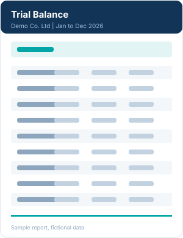
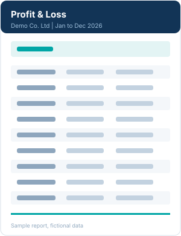
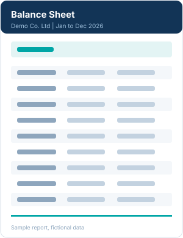
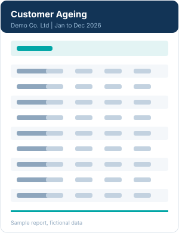
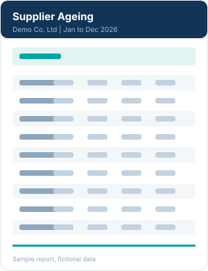
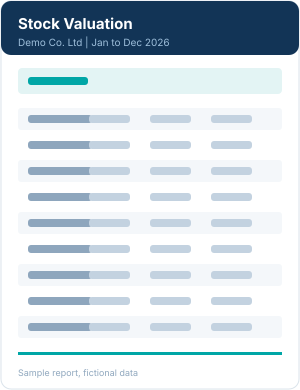
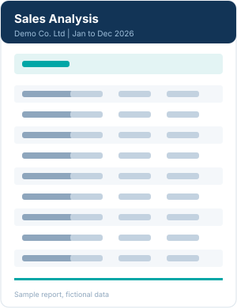
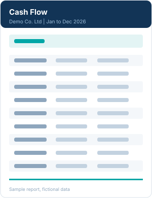
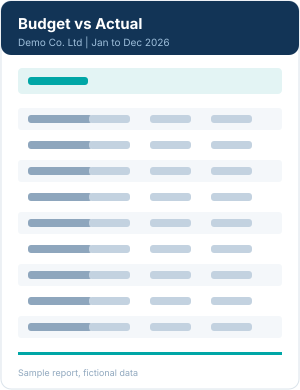
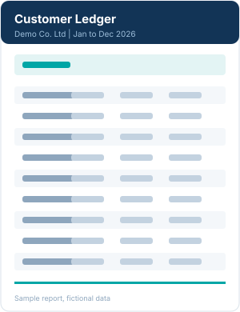
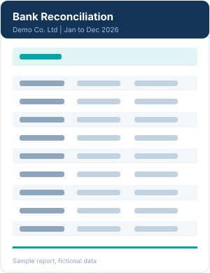
Report catalogue
| Area | Report catalogue |
|---|---|
| General Ledger | Trial Balance, Detailed GL, GL Transaction Listing, Chart of Accounts, Profit & Loss, Balance Sheet, Cash Flow, Budget vs Actual |
| Accounts Receivable | Customer Ledger, Ageing, Statement, Outstanding Invoice, Sales Register, Collection, Credit Limit Utilization, salesperson commission |
| Accounts Payable | Supplier Ledger, Ageing, Statement, Outstanding Payables, Payment History, Purchase Register, due-payment forecast |
| Banking & Cash | Bank Book, Cash Book, Bank Reconciliation, Cheque Register, Cash Flow Forecast, daily cash position |
| Fixed Assets | Asset Register, Depreciation Schedule, Additions, Disposals, Asset Movement |
| Inventory & Warehouse | Stock Ledger, Valuation, Ageing, Movement, Slow/Non-moving, Reorder Level, Bin Location, Stock Transfer |
| Sales & Purchasing | Sales Analysis, Item and Customer-wise Sales, Margin, Returns, Target vs Achievement, PO Status, GRN, Landed Cost |
| Manufacturing & Projects | BOM Costing, Material Consumption, WIP, Production Variance, Job Profitability, Project Budget vs Actual |
| Distribution | Dealer Outstanding, Distributor Performance, Route-wise Sales, Product Profitability, Credit Exposure |
Advanced management and statutory reporting
- Consolidated financial statements and multi-company trial balance
- Intercompany transaction reporting and reconciliation
- Multi-currency exposure and exchange analysis
- VAT, tax and withholding tax reports based on local requirements and configured data
- Audit trail and internal control reports
- Department, branch and cost-centre profitability
- Product contribution margin and executive financial packs
Reporting tools
| Tool | Positioning |
|---|---|
| SAP Crystal Reports | Custom Sage 300 report development |
| Sage Intelligence Reporting | Sage reporting and Excel-based analysis |
| Sage Enterprise Intelligence | Enterprise reporting and analytics (verify edition and compatibility) |
| Microsoft Excel | Advanced Excel reporting and automation |
| Microsoft SQL Server | SQL reporting and data services |
| SSRS | Custom operational reporting, where deployed |
Need better reports from Sage 300?
Send us a sample of what you need and we will propose a design.
Request a Report